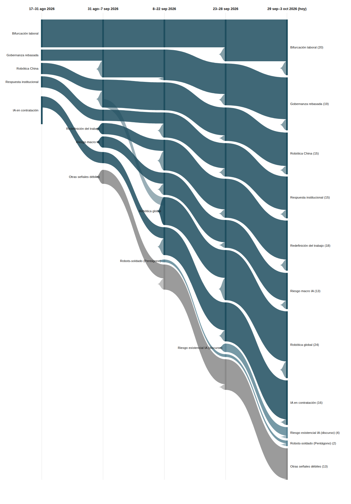

|
Vigilancia Tecnológica Competitiva
Señales del cambio
Semana 5 · 5 de octubre de 2026
California firma la primera ley estatal que protege explícitamente a los trabajadores frente a la IA justo cuando los datos de empleo en EE.UU. empiezan a mostrar grietas reales, y OpenAI presenta el futuro del trabajo como equipos de agentes de IA conversando entre sí.
|
Resumen ejecutivo
161 observaciones nuevas procesadas entre el 27 de septiembre y el 3 de octubre (la base histórica no registró observaciones adicionales en el periodo). Por volumen, esta edición prioriza ~30 observaciones de mayor relevancia estratégica; el resto refuerza patrones ya documentados sin aportar variación cualitativa nueva. El registro de señales pasa de 20 a 21: 8 fuertes (sin cambios de estado ni de fuerza esta semana, pese al gran volumen de evidencia nueva), 6 débiles con potencial de escalar y 7 débiles — una nueva esta semana. 0 latentes, 0 muertas, aunque cinco señales débiles llevan ya tres ediciones sin evidencia propia y se acercan al umbral de latencia.
Los tres movimientos más relevantes de la semana:
- California se convierte en el primer estado de EE.UU. en firmar un paquete de leyes que protege explícitamente a los trabajadores frente a la IA, justo cuando AP News reporta que la contratación se desacelera y el desempleo sube — la primera vez que esta vigilancia se apoya en un dato macro real, no solo en advertencias.
- OpenAI lanza "dots", su plataforma para desplegar agentes de IA en flujos de trabajo empresariales, y en su DevDay presenta el futuro del trabajo como equipos de agentes conversando entre sí — mientras FieldAI, startup de robótica física, cierra una ronda que la valora en 10.000 millones de dólares.
- Nace una señal débil sobre fragmentación del empleo: ejecutivos que optan por trabajo "fraccional" en vez de pleno empleo, y una encuesta donde el 61% de los trabajadores dice desempeñar ya más de un rol.
|
|
Principales insights
3. OpenAI convierte el "futuro del trabajo" en producto: agentes que conversan entre sí dentro de la empresa.
OpenAI lanza "dots", una plataforma para que los equipos de ingeniería desplieguen y escalen agentes de IA directamente en sus flujos de trabajo, y en su DevDay mostró agentes empresariales "siempre activos" que se comunican entre sí y con humanos en chats grupales. La señal Redefinición del trabajo sigue Fuerte: la IA como compañera de equipo deja de ser metáfora y pasa a ser arquitectura de producto.
Implicación: diseñar procesos de trabajo ya no es solo coordinar personas — empieza a requerir decidir qué conversaciones tienen lugar entre agentes antes de llegar a un humano.
|
|
Señales de la semana
|
|
Gráfico de evolución
Flujo de las 8 señales macro y las dos señales débiles más notorias, a lo largo de cinco periodos. El grosor de cada banda es proporcional al número de evidencias que la respaldan. El color distingue señales macro (azul petróleo), las dos señales débiles destacadas (azul claro) y el resto de señales débiles agregadas (gris).

|
|
Descripción textual del gráfico (por si no se renderiza la imagen): De izquierda a derecha, cinco columnas temporales: 17–31 ago 2026, 31 ago–7 sep 2026, 8–22 sep 2026, 23–28 sep 2026, y 29 sep–3 oct 2026 (hoy). Las ocho señales macro llegan a la quinta columna con anchos claramente distintos: Robótica global es la más gruesa (24 evidencias), seguida de Bifurcación laboral (20), Gobernanza rebasada (19), Redefinición del trabajo (18), IA en contratación (16), Robótica China y Respuesta institucional (15 cada una), y Riesgo macro IA (13, la más fina de las ocho). De las señales débiles, se muestran como bandas propias las dos con más evidencia acumulada: escalada del discurso de riesgo existencial de la IA (4 evidencias) y robots-soldado con financiación privada/Pentágono (2, reactivada esta semana tras varias ediciones sin evidencia); el resto de señales débiles (11, incluida la recién nacida sobre fragmentación del empleo) se agregan en una banda gris. Ninguna banda desaparece del todo: no hay señales latentes ni muertas todavía en el registro.
|
|
Señales a tener en cuenta
- Fragmentación del empleo: pluriempleo y ejecutivos fraccionales. Nueva esta semana, ya Débil↑ por converger dos ángulos (directivo y base) del mismo fenómeno en los mismos días. La escalaría: datos de plataformas de empleo sobre crecimiento de roles fraccionales; más encuestas que repliquen la cifra del doble rol.
- Robots-soldado con financiación privada/Pentágono. Reactivada esta semana: primera evidencia nueva (graduación de los primeros "Robotics Technician Integrators" del Ejército de EE.UU.) desde su nacimiento hace dos ediciones.
- Escalada del discurso mainstream de riesgo existencial de la IA. Suma una cuarta evidencia: un análisis sobre qué pasaría si automatizar la I+D de IA desencadenara una "explosión de inteligencia". Es ya la señal débil con más evidencia acumulada del registro.
- OpenAI Jobs Platform, "impuesto del discernimiento" y ordenanza de San Mateo. Llevan ya dos ediciones sin evidencia nueva propia, aunque el eje temático de cada una sigue vivo en otras señales (la ley de California, por ejemplo, es un instrumento distinto al de San Mateo — no se fusionan).
- OpenExecutive, AI Tax Act, centro NSF de coadaptación y predicción de Musk sobre el gasto anual en IA. Acumulan ya tres ediciones sin evidencia nueva desde su primera aparición el 7 de septiembre — a una sola edición del umbral de señal latente (4 ediciones sin evidencia). Si ninguna reaparece la próxima semana, pasarán a estado latente.
|
|
Movimientos del histórico
Nacieron: fragmentación del empleo (pluriempleo y ejecutivos fraccionales), ya Débil↑ desde su primera aparición.
Se reactivaron: robots-soldado con financiación privada/Pentágono recibe su primera evidencia nueva desde que nació, hace dos ediciones.
Latentes o muertas esta semana: ninguna, pero OpenExecutive, AI Tax Act, el centro NSF de coadaptación y la predicción de Musk (última evidencia: 2026-09-07) llegan a tres ediciones sin evidencia nueva — a una edición del umbral de latencia.
|
|
Cierre
Pregunta abierta: California acaba de convertirse en el primer estado de EE.UU. en legislar protecciones explícitas frente a la IA en el trabajo, justo cuando los datos de empleo empiezan a mostrar las primeras grietas reales. Si tu organización opera en varias jurisdicciones o usa herramientas de IA para evaluar, vigilar o gestionar a tu plantilla: ¿sabes ya qué conjunto de reglas tendrás que cumplir primero, y resistirían tus propios procesos el escrutinio que California acaba de habilitar?
Metodología: cada señal es trazable a observaciones concretas en la base de vigilancia. Una señal pasa a "latente" tras 4 ediciones sin evidencia nueva, y a "muerta" tras 8; ninguna del registro actual ha cruzado esos umbrales todavía.
|
|